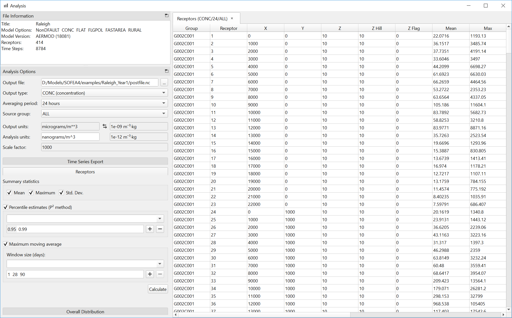

Analyzing Results¶
SOFEA has an integrated suite of post-processing algorithms for common statistics used in risk assessment, including summary statistics, moving averages, and histogram estimates. To use this capability, select Analyze Results through the main menu or click the graph button in the toolbar.
{kind=link}
Select the output file, output type, averaging period, and source group. Optionally, type in the desired output units for the analysis. Several tools are available:
- Time Series Export
Exports a CSV file with the selected data for further processing, optionally with moving averages applied to the time series for each receptor.
- Receptors
Generates summary statistics by receptor.
- Overall Distribution
Estimates a CDF or PDF of the sample distribution for all receptors.
Histogram Calculations¶
For computational efficiency, histogram calculations in SOFEA (percentile, CDF and PDF) are estimates based on the P² algorithm. For further details and accuracy analysis, see:
R. Jain and I. Chlamtac, The P² algorithm for dynamic calculation of quantiles and histograms without storing observations, Communications of the ACM, Volume 28 (October), Number 10, 1985, p. 1076-1085.
The CDF algorithm estimates a histogram of the sample cumulative distribution. The returned histogram has a specifiable amount of equiprobable (and not equal-sized) bins.
The PDF algorithm estimates a histogram of the sample distribution. The positions and sizes of the bins are determined using a specifiable number of cached samples (cache size). The range between the minimum and the maximum of the cached samples is subdivided into a specifiable number of bins (number of bins) of same size. Additionally, an under- and an overflow bin is added to capture future under- and overflow samples. Once the bins are determined, the cached samples and all subsequent samples are added to the correct bins.
For implementation details, see the Boost.Accumulators documentation.
Averaging¶
SOFEA implements EPA averaging policies for mean and rolling mean calculations using the same formulas as AERMOD. These policies are formally described in 40 CFR Appendix W to Part 51 - Guideline on Air Quality Models, § 8.4.6.2:
Hourly concentrations calculated with steady-state Gaussian plume models using calms should not be considered valid; the wind and concentration estimates for these hours should be disregarded and considered to be missing. Model predicted concentrations for 3-, 8-, and 24-hour averages should be calculated by dividing the sum of the hourly concentrations for the period by the number of valid or non-missing hours. If the total number of valid hours is less than 18 for 24-hour averages, less than 6 for 8-hour averages, or less than 3 for 3-hour averages, the total concentration should be divided by 18 for the 24-hour average, 6 for the 8-hour average, and 3 for the 3-hour average. For annual averages, the sum of all valid hourly concentrations is divided by the number of non-calm hours during the year. AERMOD has been coded to implement these instructions. For hours that are calm or missing, the AERMOD hourly concentrations will be zero. For other models listed in appendix A, a post-processor computer program, CALMPRO118 has been prepared, is available on the EPA’s SCRAM Web site (section 2.3), and should be used.
AERMOD implements these calculations in SUBROUTINE AVER (calc2.f)
for short-term averages and SUBROUTINE PERAVE (output.f) for
long-term averages. In addition to the 3-, 8-, and 24-hour averaging
periods specifically described in Appendix W, AERMOD uses the following
formula to derive the denonimator D for any short-term averaging
period, less than or equal to 24 hours:
In addition to the annual averages described in the guidance, AERMOD
also considers calm and missing hours in the denominator for PERIOD
averages of less than one year:
POSTFILE Format¶
In addition to the PLOT, POST, and OUT files produced using the regulatory version of the model, The AERMOD model within SOFEA (SOFEA-AERMOD) has been enhanced to provide a new NETCDF option for the OU POSTFILE keyword, which generates compressed output files in netCDF format. To facilitate interoperability with other data analysis and visualization packages used in climate science, the netCDF POSTFILE format generated by SOFEA-AERMOD conforms to the Climate and Forecast (CF) Metadata Conventions, Version 1.7. Specifically, the output is structured using an orthogonal multidimensional array representation, designed for efficient access to concentrations and/or deposition fluxes by averaging period, source group, receptor and time.
Dimensions are defined as follows:
Dimension |
Description |
|---|---|
|
Receptor |
|
EVALCART receptor arc |
|
GRIDCART/GRIDPOLR receptor network |
|
Source group |
|
Averaging period |
|
Time |
Variables are defined as follows, where the first dimension varies fastest:
Variable |
Dimensions |
Type |
Description |
|---|---|---|---|
|
|
double |
Receptor x-coordinate (m) |
|
|
double |
Receptor y-coordinate (m) |
|
|
double |
Receptor terrain elevation (m) |
|
|
double |
Receptor hill height scale (m) |
|
|
double |
Receptor flagpole height (m) |
|
|
int |
Receptor index |
|
|
int |
EVALCART receptor arc index |
|
|
char[8] |
EVALCART receptor arc ID |
|
|
int |
GRIDCART/GRIDPOLR receptor network index |
|
|
char[8] |
GRIDCART/GRIDPOLR receptor network ID |
|
|
char[8] |
Source group ID |
|
|
int |
Averaging period (hours) |
|
|
int |
Time value (hours since start) |
|
|
byte |
Calm or missing hour flag (1:calm; 2:missing) |
|
|
double |
Concentration value (μg/m³ or CONCUNIT) |
|
|
double |
Total deposition flux (g/m² or DEPOUNIT) |
|
|
double |
Dry deposition flux (g/m² or DEPOUNIT) |
|
|
double |
Wet deposition flux (g/m² or DEPOUNIT) |
The conc, depos, ddep, and wdep variables are only
present if the associated output type was selected in AERMOD.
The time variable contains only the hours associated with averaging
periods selected for output. If multiple averaging periods are selected,
the time interval corresponds to the shortest averaging period. If no
average was calculated at a particular time point, for example an
average at hour 3 for a 24-hour averaging period, the concentration and
deposition arrays will contain a missing value at the associated index
(NC_FILL_DOUBLE, defined as 9.9692099683868690e+36).
Using Python¶
The xarray package in Python provides a convenient interface for specialized analyses. For example, the following code could be used to calculate the exact 95th percentile concentration at each receptor, for the 24-hour averaging period:
import numpy as np
import xarray as xr
ds = xr.open_dataset('postfile.nc')
aveconc = ds['conc'].sel(ave=24)
p95 = aveconc.groupby('rec').reduce(np.nanpercentile, dim='time', q=0.95)
print(p95)